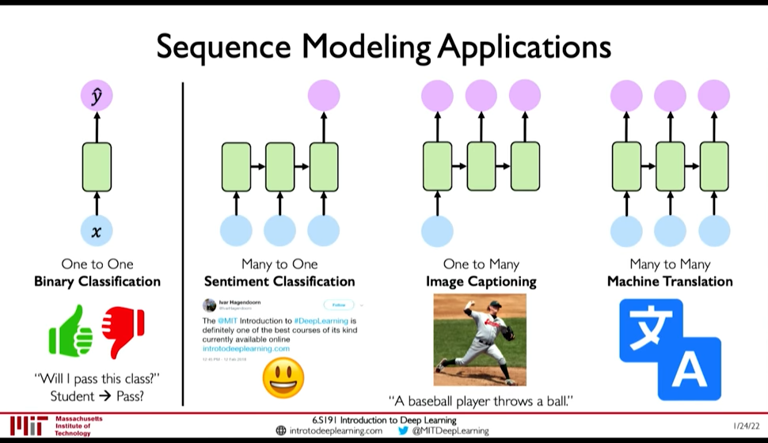

Sequence Modeling
Table of Contents
See RNN and Transformers (MIT 6.S191 2022) for lecture video link.

Figure 1: Squential Model Application
1. Example Tasks
Example of Sequence Modeling tasks:
- Sequential Input -> One Output : Sentiment Classification
- One Input -> Sequential Output: Image Captioning
- Sequential Input -> Sequential Output: Machine Translation
2. Sequence Modelling: Design Criteria
To model sequences, we need to:
- Handle variable-length sequences
- Track long-term dependencies
- Maintain infromation about order
- Share parameters across the sequence
2.1. Example Task: Predict the Next Word
First we need to address Embedding: i.e. How to represent language to a Neural Network? (@ 0:23:10)
- One-hot embedding
- Learned Embedding (0:25:50 Representation Learning)

Figure 2: Encoding Language for NN
Now observe that this problem demands all the Design Criteria for sequential modelling:
- 0:26:30 Variable-Length : Sentences are not of fixed size
- 0:26:38 Long-term dependencies: An Idea in the beginning of a text influences the meaning till the end.
- 0:27:07 Sequence Order: Order of words in a sentence matter.